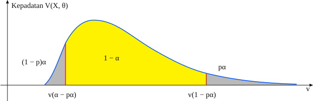

Seperti biasa, titik awal kita adalah sebuah eksperimen acak dengan ruang sampel yang mendasari dan sebuah ukuran probabilitas \(\P\). Dalam model statistik dasar, terdapat variabel acak teramati \(\bs{X}\) yang mengambil nilai dalam suatu himpunan \(S\). Secara umum, struktur \(\bs{X}\) dapat cukup rumit. Misalnya, jika eksperimennya adalah mengambil sampel \(n\) objek dari suatu populasi dan mencatat berbagai pengukuran yang diminati, maka \[ \bs{X} = (X_1, X_2, \ldots, X_n) \] dengan \(X_i\) sebagai vektor pengukuran untuk objek ke-\(i\). Kasus khusus terpenting terjadi ketika \((X_1, X_2, \ldots, X_n)\) saling bebas dan berdistribusi identik. Dalam hal ini, kita mempunyai sampel acak berukuran \(n\) dari distribusi bersama tersebut.
Misalkan pula distribusi \(\bs{X}\) bergantung pada parameter \(\theta\) yang nilainya berada dalam suatu himpunan \(\Theta\). Parameter itu juga dapat bernilai vektor; dalam hal ini \(\Theta \subseteq \R^k\) untuk suatu \(k \in \N_+\), dan vektor parameternya berbentuk \(\bs{\theta} = (\theta_1, \theta_2, \ldots, \theta_k)\).
Sebuah himpunan kepercayaan adalah himpunan bagian \(C(\bs{X})\) dari ruang parameter \(\Theta\) yang hanya bergantung pada variabel data \(\bs{X}\), bukan pada parameter yang tak diketahui. Tingkat kepercayaan adalah infimum, atas seluruh ruang parameter, dari peluang bahwa \(\theta \in C(\bs{X})\): \[ \inf_{\theta \in \Theta}\P_\theta[\theta \in C(\bs{X})] \]
Jadi, dalam suatu pengertian, himpunan kepercayaan adalah statistik bernilai himpunan. Himpunan kepercayaan merupakan penduga \(\theta\) karena kita berharap \(\theta \in C(\bs{X})\) dengan peluang besar, sehingga tingkat kepercayaannya tinggi. Karena distribusi \(\bs{X}\) bergantung pada \(\theta\), ukuran probabilitas \(\P\) dalam definisi tingkat kepercayaan juga bergantung pada \(\theta\); indeks ini biasanya disembunyikan agar notasi tetap ringkas. Biasanya kita berusaha membangun himpunan kepercayaan bagi \(\theta\) dengan tingkat yang ditetapkan sebesar \(1 - \alpha\), dengan \(0 \lt \alpha \lt 1\). Tingkat kepercayaan yang lazim adalah 0,9, 0,95, dan 0,99. Kadang-kadang yang dapat dibangun hanyalah himpunan yang tingkat kepercayaannya sekurang-kurangnya \(1 - \alpha\); himpunan seperti ini disebut himpunan kepercayaan \(1 - \alpha\) yang konservatif bagi \(\theta\).
Misalkan \(C(\bs{X})\) adalah himpunan kepercayaan bertingkat sekurang-kurangnya \(1 - \alpha\) bagi parameter \(\theta\). Ketika eksperimen dijalankan dan data \(\bs{x}\) diamati, himpunan kepercayaan yang dihitung adalah \(C(\bs{x})\). Nilai sebenarnya dari \(\theta\) berada atau tidak berada dalam himpunan itu, dan biasanya kita tidak akan pernah mengetahuinya. Namun, menurut hukum bilangan besar, jika eksperimen kepercayaan tersebut diulangi terus-menerus pada nilai parameter yang sama, proporsi himpunan yang memuat \(\theta\) akan konvergen ke \(\P_\theta[\theta \in C(\bs{X})] \ge 1 - \alpha\); kesamaan berlaku bila peluang cakupan pada nilai parameter tersebut tepat sama dengan tingkat nominalnya. Inilah makna tepat istilah kepercayaan. Dalam terminologi statistika yang lazim, himpunan acak \(C(\bs{X})\) adalah penduga, sedangkan himpunan deterministik \(C(\bs{x})\), berdasarkan nilai amatan \(\bs{x}\), adalah dugaan.
Kualitas himpunan kepercayaan sebagai penduga \(\theta\) ditentukan oleh dua faktor: tingkat kepercayaan dan presisi, yang diukur melalui ukuran
himpunan tersebut. Penduga yang baik berukuran kecil—sehingga memberi dugaan \(\theta\) yang presisi—dan memiliki tingkat kepercayaan tinggi. Akan tetapi, untuk \(\bs{X}\) tertentu biasanya terdapat kompromi antara tingkat kepercayaan dan presisi: tingkat kepercayaan hanya dapat dinaikkan dengan memperbesar himpunan, sedangkan ukuran himpunan hanya dapat diperkecil dengan menurunkan tingkat kepercayaan. Cara mengukur ukuran
himpunan kepercayaan bergantung pada dimensi ruang parameter dan sifat himpunannya. Selain itu, ukuran himpunan biasanya acak, walaupun dalam beberapa kasus khusus dapat bersifat deterministik.
Kasus-kasus ekstrem dapat memberi sedikit pemahaman. Pertama, misalkan \(C(\bs{X}) = \Theta\). Penduga himpunan ini mempunyai tingkat kepercayaan maksimum 1, tetapi tanpa presisi sehingga tidak berguna—kita sudah mengetahui bahwa \(\theta \in \Theta\). Pada ekstrem lain, misalkan \(C(\bs{X})\) adalah himpunan beranggota tunggal. Penduga himpunan ini mempunyai presisi terbaik yang mungkin, tetapi untuk distribusi kontinu biasanya memiliki tingkat kepercayaan 0. Di antara kedua ekstrem itu, kita berharap menemukan penduga himpunan yang sekaligus mempunyai tingkat kepercayaan dan presisi tinggi.
Misalkan \(C_i(\bs{X})\) adalah himpunan kepercayaan bertingkat \(1 - \alpha_i\) bagi \(\theta\), untuk \(i \in \{1, 2, \ldots, k\}\). Jika \(\alpha = \alpha_1 + \alpha_2 + \cdots + \alpha_k \lt 1\), maka \(C_1(\bs{X}) \cap C_2(\bs{X}) \cap \cdots \cap C_k(\bs{X})\) adalah himpunan kepercayaan konservatif bertingkat \(1 - \alpha\) bagi \(\theta\).
Hasil ini mengikuti pertidaksamaan Bonferroni.
Dalam banyak kasus, kita ingin menduga parameter bernilai riil \(\lambda = \lambda(\theta)\) yang nilainya berada dalam interval \((a, b)\), dengan \(a, \, b \in \R\) dan \(a \lt b\). Tentu saja, mungkin \(a = -\infty\) atau \(b = \infty\). Dalam konteks ini, himpunan kepercayaan sering berbentuk \[ C(\bs{X}) = \left\{\theta \in \Theta: L(\bs{X}) \lt \lambda(\theta) \lt U(\bs{X})\right\} \] dengan \(L(\bs{X})\) dan \(U(\bs{X})\) sebagai statistik bernilai riil. Dalam hal ini, \((L(\bs{X}), U(\bs{X}))\) disebut interval kepercayaan bagi \(\lambda\). Jika \(L(\bs{X})\) dan \(U(\bs{X})\) keduanya acak, interval tersebut sering disebut dua sisi. Dalam kasus khusus \(U(\bs{X}) = b\), \(L(\bs{X})\) disebut batas bawah kepercayaan bagi \(\lambda\). Dalam kasus khusus \(L(\bs{X}) = a\), \(U(\bs{X})\) disebut batas atas kepercayaan bagi \(\lambda\).
Misalkan \(L(\bs{X})\) adalah batas bawah kepercayaan bertingkat \(1 - \alpha\) bagi \(\lambda\), dan \(U(\bs{X})\) adalah batas atas kepercayaan bertingkat \(1 - \beta\) bagi \(\lambda\). Jika \(\alpha + \beta \lt 1\), maka \((L(\bs{X}), U(\bs{X}))\) adalah interval kepercayaan konservatif bertingkat \(1 - (\alpha + \beta)\) bagi \(\lambda\).
Membangun himpunan kepercayaan bagi parameter \(\theta\) mungkin tampak sangat sulit. Namun, dalam banyak kasus khusus yang penting, himpunan kepercayaan dapat dibangun dengan mudah dari variabel acak tertentu yang dikenal sebagai variabel pivot.
Misalkan \(V\) adalah fungsi dari \(S \times \Theta\) ke suatu himpunan \(T\). Variabel acak \(V(\bs{X}, \theta)\) adalah variabel pivot bagi \(\theta\) jika distribusinya tidak bergantung pada \(\theta\). Secara khusus, \(\P[V(\bs{X}, \theta) \in B]\) konstan terhadap \(\theta \in \Theta\) untuk setiap himpunan terukur \(B \subseteq T\).
Gagasan dasarnya adalah menggabungkan \(\bs{X}\) dan \(\theta\) secara aljabar sedemikian rupa sehingga ketergantungan distribusi variabel acak hasil \(V(\bs{X}, \theta)\) pada \(\theta\) dapat dihilangkan. Jika distribusi variabel pivot diketahui, maka untuk suatu \(\alpha\) kita dapat mencari \(B \subseteq T\), yang tidak bergantung pada \(\theta\), sedemikian sehingga \( \P_\theta\left[V(\bs{X}, \theta) \in B\right] = 1 - \alpha \). Dengan demikian, himpunan kepercayaan bertingkat \(1 - \alpha\) bagi parameter tersebut diberikan oleh \( C(\bs{X}) = \{ \theta \in \Theta: V(\bs{X}, \theta) \in B \} \).

Sekarang misalkan variabel pivot \(V(\bs{X}, \theta)\) bernilai riil dan, demi kesederhanaan, mempunyai distribusi kontinu. Untuk \(p \in (0, 1)\), misalkan \(v(p)\) menyatakan kuantil berorde \(p\) dari variabel pivot \(V(\bs{X}, \theta)\). Berdasarkan definisi variabel pivot, \(v(p)\) tidak bergantung pada \(\theta\).
Untuk setiap \(p \in (0, 1)\), sebuah himpunan kepercayaan bertingkat \(1 - \alpha\) bagi \(\theta\) adalah \[ \left\{\theta \in \Theta: v(\alpha - p \alpha) \lt V(\bs{X}, \theta) \lt v(1 - p \alpha)\right\} \]
Menurut definisi, peluang kejadian tersebut adalah \((1 - p \alpha) - (\alpha - p \alpha) = 1 - \alpha\).
Himpunan kepercayaan di atas menempatkan peluang \((1 - p) \alpha\) di ekor kiri dan \(p \alpha\) di ekor kanan distribusi variabel pivot \(V(\bs{X}, \theta)\). Kasus khusus \(p = \frac{1}{2}\) disebut kasus berekor sama dan merupakan kasus yang paling umum.

Untuk \(p\) tetap, himpunan kepercayaan mengecil ketika \(\alpha\) membesar, sehingga membesar ketika \(1 - \alpha\) membesar, dalam arti relasi himpunan bagian.
Untuk himpunan kepercayaan , secara alami kita ingin memilih \(p\) yang meminimalkan ukuran himpunan dalam suatu pengertian. Namun, masalah ini sering sulit. Interval berekor sama, yang bersesuaian dengan \(p = \frac{1}{2}\), merupakan kasus yang paling sering digunakan dan kadang-kadang—tetapi tidak selalu—merupakan pilihan optimal. Variabel pivot jauh dari unik; tantangannya adalah menemukan variabel pivot yang distribusinya diketahui dan menghasilkan batas parameter yang rapat, yaitu presisi tinggi.
Misalkan \(V(\bs{X}, \theta)\) adalah variabel pivot bagi \(\theta\). Jika \(g\) adalah fungsi yang didefinisikan pada daerah nilai \(V\) dan \(g\) tidak melibatkan parameter tak diketahui, maka \(U = g[V(\bs{X}, \theta)]\) juga merupakan variabel pivot bagi \(\theta\).
Untuk keluarga lokasi-skala, variabel pivot dapat ditemukan dengan mudah. Misalkan \(Z\) adalah variabel acak bernilai riil dengan distribusi kontinu yang mempunyai fungsi kepadatan probabilitas \(g\) dan tidak mengandung parameter tak diketahui. Misalkan \(X = \mu + \sigma Z\), dengan \(\mu \in \R\) dan \(\sigma \in (0, \infty)\) sebagai parameter. Ingat bahwa fungsi kepadatan probabilitas \(X\) diberikan oleh \[ f_{\mu, \sigma}(x) = \frac{1}{\sigma} g\left( \frac{x - \mu}{\sigma} \right), \quad x \in \R\] dan keluarga distribusi yang bersesuaian disebut keluarga lokasi-skala yang terkait dengan distribusi \(Z\); \(\mu\) adalah parameter lokasi dan \(\sigma\) adalah parameter skala. Secara umum, kedua parameter ini dianggap tak diketahui.
Sekarang misalkan \(\bs{X} = (X_1, X_2, \ldots, X_n)\) adalah sampel acak berukuran \(n\) dari distribusi \(X\); inilah vektor hasil yang dapat diamati. Untuk setiap \(i\), misalkan \[ Z_i = \frac{X_i - \mu}{\sigma} \]
Vektor acak \(\bs{Z} = (Z_1, Z_2, \ldots, Z_n)\) adalah sampel acak berukuran \(n\) dari distribusi \(Z\).
Khususnya, \(\bs{Z}\) adalah variabel pivot bagi \((\mu, \sigma)\), sebab \(\bs{Z}\) merupakan fungsi dari \(\bs{X}\), \(\mu\), dan \(\sigma\), sedangkan distribusi \(\bs{Z}\) tidak bergantung pada \(\mu\) maupun \(\sigma\). Karena itu, setiap fungsi dari \(\bs{Z}\) juga merupakan variabel pivot bagi \((\mu, \sigma)\), asalkan fungsi tersebut tidak melibatkan parameternya. Tentu saja, sebagian variabel pivot ini jauh lebih berguna daripada yang lain untuk menduga \(\mu\) dan \(\sigma\). Dalam latihan berikut, kita mengkaji dua variabel pivot yang umum dan penting.
Misalkan \(M(\bs{X})\) dan \(M(\bs{Z})\) masing-masing menyatakan rata-rata sampel dari \(\bs{X}\) dan \(\bs{Z}\). Maka \(M(\bs{Z})\) adalah variabel pivot bagi \((\mu, \sigma)\), sebab \[ M(\bs{Z}) = \frac{M(\bs{X}) - \mu}{\sigma} \]
Misalkan \(m\) menyatakan fungsi kuantil variabel pivot \(M(\bs{Z})\). Untuk setiap \(p \in (0, 1)\), sebuah himpunan kepercayaan bertingkat \(1 - \alpha\) bagi \((\mu, \sigma)\) adalah \[ Z_{\alpha, p}(\bs{X}) = \{(\mu, \sigma): M(\bs{X}) - m(1 - p \alpha) \sigma \lt \mu \lt M(\bs{X}) - m(\alpha - p \alpha) \sigma \} \]
Himpunan kepercayaan yang dibangun dalam berbentuk kerucut
dalam ruang parameter \((\mu, \sigma)\), dengan titik puncak \((M(\bs{X}), 0)\). Jika kuantil penyebut tidak nol, garis-garis batasnya mempunyai kemiringan \(-1 / m(1 - p \alpha)\) dan \(-1 / m(\alpha - p \alpha)\), seperti pada grafik di bawah; bila suatu kuantil bernilai nol, batas yang bersesuaian adalah garis vertikal. Perhatikan bahwa kedua kemiringan dapat sama-sama negatif atau sama-sama positif.

Himpunan kepercayaan yang tak terbatas jelas bukan hasil yang baik, tetapi hal itu mungkin tidak mengejutkan: kita menduga dua parameter riil dengan satu variabel pivot bernilai riil. Namun, jika \(\sigma\) diketahui, himpunan tersebut menentukan sebuah interval kepercayaan bagi \(\mu\). Secara geometris, interval kepercayaan itu adalah penampang horizontal pada nilai \(\sigma\) yang diketahui.
Dua himpunan kepercayaan satu sisi bertingkat \(1 - \alpha\) bagi \((\mu, \sigma)\) adalah:
Jika \(\sigma\) diketahui, bagian (a) memberikan batas bawah kepercayaan bertingkat \(1 - \alpha\) bagi \(\mu\), sedangkan bagian (b) memberikan batas atas kepercayaan bertingkat \(1 - \alpha\) bagi \(\mu\).
Untuk ukuran sampel sekurang-kurangnya 2, misalkan \(S(\bs{X})\) dan \(S(\bs{Z})\) masing-masing menyatakan simpangan baku sampel dari \(\bs{X}\) dan \(\bs{Z}\). Maka \(S(\bs{Z})\) adalah variabel pivot bagi \((\mu, \sigma)\), sekaligus variabel pivot bagi \(\sigma\), sebab \[ S(\bs{Z}) = \frac{S(\bs{X})}{\sigma} \]
Misalkan \(s\) menyatakan fungsi kuantil \(S(\bs{Z})\). Untuk setiap \(\alpha \in (0, 1)\) dan \(p \in (0, 1)\), sebuah himpunan kepercayaan bertingkat \(1 - \alpha\) bagi \((\mu, \sigma)\) adalah \[ V_{\alpha, p}(\bs{X}) = \left\{(\mu, \sigma): \frac{S(\bs{X})}{s(1 - p \alpha)} \lt \sigma \lt \frac{S(\bs{X})}{s(\alpha - p \alpha)} \right\} \]
Himpunan kepercayaan ini tidak memberikan informasi tentang \(\mu\), sebab variabel acak di atas merupakan variabel pivot bagi \(\sigma\) saja. Himpunan tersebut juga dapat dipandang sebagai interval kepercayaan terbatas bagi \(\sigma\).

Dua himpunan kepercayaan satu sisi bertingkat \(1 - \alpha\) bagi \((\mu, \sigma)\) adalah:
Kedua batas mengikuti langsung, masing-masing, dari \(\P[S(\bs{Z}) \lt s(1 - \alpha)] = 1 - \alpha\) dan \(\P[S(\bs{Z}) \gt s(\alpha)] = 1 - \alpha\). Argumen ini tidak memerlukan asumsi kuantil ujung yang tak dinyatakan.
Himpunan pada bagian (a) memberikan batas bawah kepercayaan bertingkat \(1 - \alpha\) bagi \(\sigma\), sedangkan himpunan pada bagian (b) memberikan batas atas kepercayaan bertingkat \(1 - \alpha\) bagi \(\sigma\).
Kita dapat mengiriskan himpunan kepercayaan yang bersesuaian dengan kedua variabel pivot untuk menghasilkan himpunan kepercayaan yang konservatif dan terbatas.
Jika \(\alpha, \; \beta, \; p, \; q \in (0, 1)\) dan \(\alpha + \beta \lt 1\), maka \(Z_{\alpha, p}(\bs{X}) \cap V_{\beta, q}(\bs{X})\) adalah himpunan kepercayaan konservatif bertingkat \(1 - (\alpha + \beta)\) bagi \((\mu, \sigma)\).

Keluarga lokasi-skala terpenting adalah keluarga distribusi normal. Masalah pendugaan pada model normal dibahas pada bagian berikutnya. Dalam sisa bagian ini, kita mengkaji satu keluarga skala penting lainnya.
Ingat bahwa distribusi eksponensial dengan parameter skala \(\sigma \in (0, \infty)\) mempunyai fungsi kepadatan probabilitas \(f(x) = \frac{1}{\sigma} e^{-x / \sigma}, \; x \in [0, \infty)\). Distribusi ini merupakan keluarga skala yang terkait dengan distribusi eksponensial standar, yang mempunyai fungsi kepadatan probabilitas \(g(x) = e^{-x}, \; x \in [0, \infty)\). Distribusi eksponensial banyak digunakan untuk memodelkan waktu acak, seperti masa pakai dan waktu kedatangan
, terutama dalam konteks model Poisson. Sekarang misalkan \(\bs{X} = (X_1, X_2, \ldots, X_n)\) adalah sampel acak berukuran \(n\) dari distribusi eksponensial dengan parameter skala tak diketahui \(\sigma\). Misalkan
\[ Y = \sum_{i=1}^n X_i \]
Variabel acak \(\frac{2}{\sigma} Y\) mempunyai distribusi khi-kuadrat dengan \(2 n\) derajat kebebasan, sehingga merupakan variabel pivot bagi \(\sigma\).
Variabel pivot ini merupakan kelipatan dari variabel \(M\) yang dibangun di atas untuk keluarga lokasi-skala umum, dengan \(\mu = 0\). Untuk \(p \in (0, 1)\) dan \(k \in (0, \infty)\), misalkan \(\chi_k^2(p)\) menyatakan kuantil berorde \(p\) dari distribusi khi-kuadrat dengan \(k\) derajat kebebasan. Untuk nilai \(k\) dan \(p\) tertentu, \(\chi_k^2(p)\) dapat diperoleh dari aplikasi kuantil atau dari sebagian besar perangkat lunak statistika.
Ingat bahwa
Untuk setiap \(\alpha \in (0, 1)\) dan \(p \in (0, 1)\), sebuah interval kepercayaan bertingkat \(1 - \alpha\) bagi \(\sigma\) adalah \[ \left( \frac{2\,Y}{\chi_{2n}^2(1 - p \alpha)}, \frac{2\,Y}{\chi_{2n}^2(\alpha - p \alpha)} \right) \]
Perhatikan bahwa
Di antara interval kepercayaan dua sisi yang dibangun di atas, secara alami kita memilih interval dengan panjang terkecil karena interval itu memberikan informasi terbanyak tentang parameter \(\sigma\). Namun, meminimalkan panjang sebagai fungsi \(p\) sulit secara komputasional. Interval kepercayaan dua sisi yang lazim digunakan adalah interval berekor sama, yang diperoleh dengan mengambil \(p = \frac{1}{2}\): \[ \left( \frac{2\,Y}{\chi_{2n}^2(1 - \alpha/2)}, \frac{2\,Y}{\chi_{2n}^2(\alpha/2)} \right) \]
Masa pakai suatu jenis komponen, dalam jam, mengikuti distribusi eksponensial dengan parameter skala tak diketahui \(\sigma\). Sepuluh perangkat dioperasikan sampai gagal; masa pakainya adalah 592, 861, 1470, 2412, 335, 3485, 736, 758, 530, 1961.